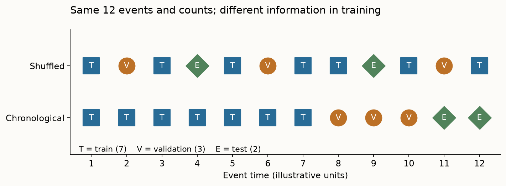
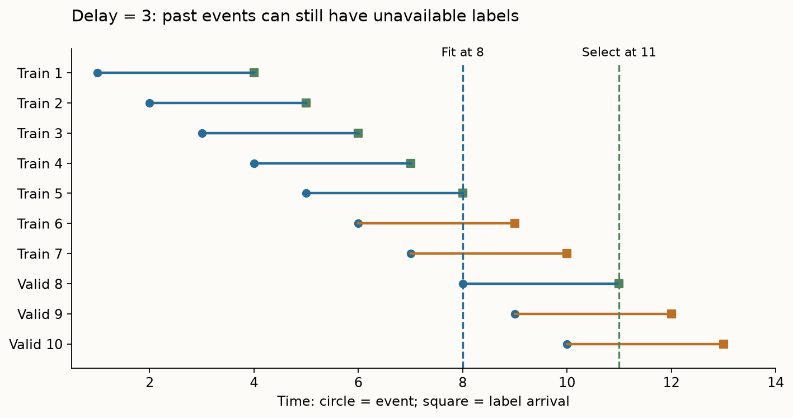
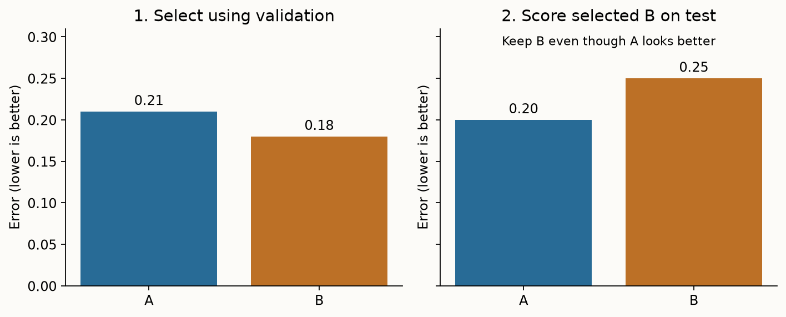
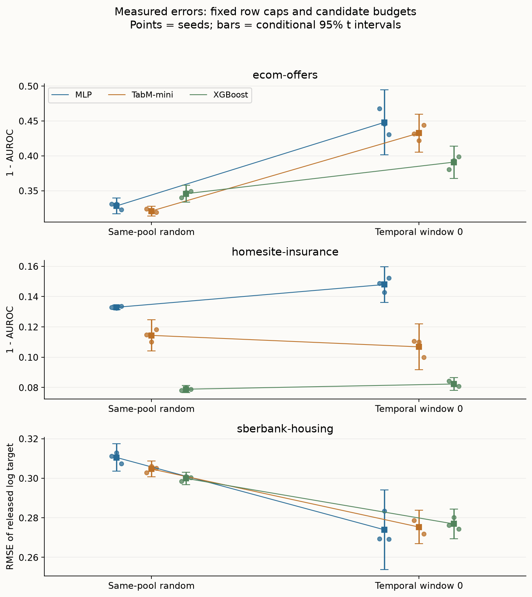
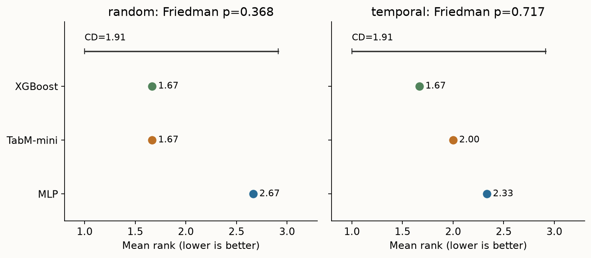

Year 2 · Quarter 2 · Lesson 055
The temporal-split reality
The split is part of the claim.
L054 gave you a parameter-efficient ensemble. Now test the evaluation procedure that decides whether it is useful. Your tangible win: implement a timestamp-safe partition, audit a released benchmark split, and compare three existing baselines under random and temporal evaluation without manufacturing a ranking reversal.
For the relational mission, a future RDL gain must survive the same prediction-time information boundary as its flat-table baseline. A graph does not repair an evaluation that knows tomorrow. This lesson introduces an evaluation protocol, not a new architecture.
Primary reading: Rubachev et al., TabReD: Analyzing Pitfalls and Filling the Gaps in Tabular Deep Learning Benchmarks, §5.4 and Figure 2 (ICLR 2025); then §4 and Appendix C.2. Read the short route through sections 1–4 first; use sections 5–7 with the lab.
Recall before reading
Cold L054 bridge — answer before opening
What does TabM average at inference? Why can correlated members limit that gain? What did three model seeds on one fixed split leave unmeasured? Answer: probabilities for classification, raw outputs for regression; shared errors survive averaging; new splits and future periods were not sampled.
1. Two tests, two questions
An evaluation target (also called an estimand) is the quantity your experiment is intended to estimate. A random split distributes rows from the observed period among training, validation and test. A temporal split assigns earlier rows to training and later rows to evaluation. Neither word alone proves validity: validity comes from matching the intended deployment.
Let x be the features available for a prediction, y its eventual outcome, f a fitted model, and ℓ(y,f(x)) its prediction loss. If Pmix is the mixture of periods in the collected data and Pfuture is the later deployment population, the two targets are:
R_mix = E_(x,y)~P_mix [ loss(y, f_mix(x)) ] R_future = E_(x,y)~P_future [ loss(y, f_past(x)) ]
The expectation E means an average over possible examples. The subscript on f matters too: both the training population and the test population change. Their measured difference is therefore a protocol gap, not an isolated causal effect of distribution shift. Here temporal shift means that the distribution of inputs, outcomes, or their relationship changes with time.
Example: random insurance rows from January–December test interpolation within that year's mixture. Training through September and testing November–December asks about later business. If the future is the target, shuffled folds can give an overly favorable estimate; they need not do so on every dataset. A lower future error can also occur when the later period is easier.
A split encodes where the predictor will be used¶
Random splitting asks how well a model predicts another row from approximately the same sampled mixture. Temporal splitting asks how well a model trained on earlier information predicts later rows. The difference is not merely that the second test is harder. It changes the relationship between the training population and the evaluation population.
Imagine a table covering two years in which a product policy changes halfway through. A random split places examples from both policies in training and test. A model can learn both regimes, possibly using a date or proxy feature to distinguish them. A forward split trained only before the change must extrapolate into the new policy. Both tests can be correctly implemented while answering different operational questions.
Temporal order is necessary for a forecasting claim, but it is not sufficient for a realistic deployment simulation. Repeated entities, delayed labels, retrospectively updated features and the intended retraining cadence still matter. A random split can leak entity-specific history across partitions; a time split can also leak future information through a feature that was reconstructed incorrectly.
Do not define realism by a preferred model ranking. If trees win randomly and a neural model wins temporally, inspect the protocol and effect sizes before attaching a story about adaptation. The ranking change may reflect sample size, class prevalence, feature availability or tuning behavior as well as drift.
The useful report contains two named estimands and two result panels. Averaging their ranks into a single winner hides the decision you need to make: interpolate within the observed mixture, or predict after the historical cutoff.
2. Trace the rows before fitting anything
Use one fixed row pool, two partition rules, the same partition sizes, the same model candidates and the same measurement. That controls several avoidable differences. It still changes which examples a model learns from and predicts.

For timestamp tᵢ, validation boundary a, and test boundary b, use three disjoint, exhaustive conditions:
train: tᵢ < a validation: a ≤ tᵢ < b test: b ≤ tᵢ
All rows with the same timestamp stay together. This can sacrifice exact row-count ratios. In the lab you implement this rule from scratch and check unsorted input plus tied timestamps. Sorting then slicing by row count can divide one timestamp across two partitions.
Released-split audit: our downloaded TabReD random-0 and sliding-window-0 partitions have identical underlying row pools and corresponding sizes. Each of the three temporal partitions shares a boundary timestamp with its neighbor. We retain the supplied indices for the benchmark comparison, disclose that they satisfy nondecreasing rather than strictly separated times, and contrast them with your stricter splitter. The numeric clock's absolute units are unnecessary for that ordering check.
Make cutoffs a rule over records, not a picture¶
Suppose the declared windows are training before day 60, validation from day 60 through day 79, and test from day 80 onward. A row exactly at day 60 belongs to validation under this half-open convention. If one function uses ≤60 for training while another uses ≥60 for validation, that boundary row appears twice. The plot can look reasonable while the partitions overlap.
Store row IDs for each partition and assert disjointness directly. Sort order alone is not identity: filtering, joins and resetting an index can change positional indices. Preserve a stable original identifier so prediction rows can be joined back to the correct outcomes.
Tied timestamps require care. Splitting a tie group by position may send events with the same recorded time into different windows. This may be acceptable under a declared convention, but it does not establish a strict before/after relationship within the group. Use the temporal resolution your data actually supports.
An expanding-window evaluation trains on all eligible past rows and moves the evaluation window forward. A rolling-window evaluation retains only a recent history. Expanding windows preserve more data; rolling windows may reduce stale information. Neither is an architectural property. The window policy belongs to the training procedure and must be held fixed in model comparisons.
If a label summarizes the next 30 days, a row dated just before the training cutoff may have an outcome window extending beyond it. A purge or eligibility filter may be needed to enforce the intended information boundary. The appropriate gap depends on the target definition and availability, not on a universal number of days.
3. An event timestamp is only one clock
A prediction has at least three relevant times: when the event occurs, when each feature becomes available, and when its label arrives. A loan made on Monday can default months later. A model fitted Tuesday cannot train on that Monday loan's eventual default label, even though the event is in the past. Likewise, a transaction's eventual settlement status is not a feature available at authorization.
Our worked example fits weights at time 8 and selects a candidate at time 11. Training events are 1–7, validation events 8–10. With label delay 3, event 6's label arrives at 9, too late for weight fitting. Only validation event 8's label arrives by the selection deadline 11. Availability exactly at a deadline is allowed in this illustration. Test labels are read later for scoring.
Predict: how many labels become usable if delay falls from 3 to 1? Move the slider, then trace event 6 in the table. Event partitions stay fixed; the available information changes.

This is a synthetic availability audit, not an accusation about these datasets. The released arrays expose event metadata but do not establish per-feature availability or label delay. Our experiment assumes their released features and labels are suitable for the benchmark. For a deployment claim, obtain that provenance separately. A temporal gap may help accommodate delays, but its size must follow the actual information horizon.
Event time and availability time answer different questions¶
Let t_event be when the underlying event happened and t_available be when a particular value became usable. At prediction time τ, the event may be in the past while its final outcome remains unknown. A point-in-time query must respect availability, not merely event order.
For example, a purchase occurs on day 10, a refund is requested on day 17 and the final status is recorded on day 20. Predicting on day 12 may use the purchase amount as it was known then. It cannot use the final refund flag simply because that flag is now stored on the row dated day 10.
Aggregations inherit the same requirement. “Customer's prior refund rate” must be computed from outcomes available by the prediction cutoff. Filtering purchases by event date and then aggregating their current final statuses can leak future outcomes through an apparently historical feature.
There can be more than two clocks: ingestion time, correction time and feature-materialization time can differ. Begin with the minimal event/availability distinction, then record additional clocks when they change what the system could know. A feature lineage table is often more useful than an elaborate model diagram for this audit.
In the lab, explain at least one feature in words as an as-of query: “For this entity, using records and labels available by τ, compute this aggregate.” If you cannot write that sentence unambiguously, you cannot yet defend the feature's historical legality.
4. Validation is inside the time boundary
Training fits weights and preprocessing. Validation chooses a candidate and a neural checkpoint (the stored weights after a training epoch). Test measures the already-selected procedure. Future validation labels can leak into the chosen model even when its gradient updates use only historical training rows.
Fit median imputation on training rows, replace missing values using those medians, then fit mean and standard deviation on the filled training matrix. Apply these frozen statistics to validation and test. If a training column is entirely missing, use zero; if its standard deviation is zero, use one as its scale. These conventions make the operation defined without consulting later rows. Regression targets are standardized using training statistics inside the neural trainer, then predictions are restored to the released target scale.

To study whether a validation protocol selects useful models, keep the final future test fixed and vary only how historical training/validation rows are assigned. That answers a narrower question than swapping both train and test populations. L055b will develop the validation-protocol thread further.
Validation simulates a decision made before the final period¶
A temporal validation block should come after training and before the untouched test block. Hyperparameters and stopping decisions use that validation period. This simulates a practitioner learning from a recent historical deployment interval before committing to the next one.
Suppose model A is selected because it did well on the final test month, then you report that same month as evidence for A. The chronological split has not prevented selection leakage. Time ordering governs data availability; independence of final evaluation also requires controlling which outcomes guide decisions.
Refitting after selection needs an explicit policy. You may choose a recipe on training/validation and then fit it on their combined eligible history before testing. That increases available data, but it changes the fitted predictor. Both families should receive the declared refit treatment, and preprocessing must be refitted only on the newly legal training pool.
A later performance drop does not identify its cause. Compare feature distributions, target prevalence, calibration and conditional errors. A change in P(X) is covariate shift; a change in P(Y|X) is a conditional mechanism change. Observed drift diagnostics can suggest hypotheses, but finite-sample changes and hidden variables complicate causal attribution.
Design the next intervention around a falsifiable explanation¶
If you suspect old data is harmful, compare rolling and expanding histories at matched evaluation cutoffs. If you suspect calibration drift, fit a calibrator using only a preceding eligible period and evaluate later. If you suspect a feature became unavailable, reconstruct that feature as of time and rerun the same rows. Each experiment targets a different explanation.
The checkpoint is complete when you can defend the row boundary, feature boundary, selection boundary and interpretation. A smaller score with legal information is more useful for deployment planning than an impressive number whose historical inputs cannot be reconstructed.
5. What TabReD establishes
TabReD adds eight feature-rich industrial tasks with temporal splits. Its split study uses three paired temporal/random splits and 15 initialization seeds, comparing MLP, MLP-PLR, XGBoost and TabR-S. It reports changed scores, relative margins and ranks; XGBoost's lead shrinks under temporal evaluation. This is not a universal tree-versus-neural ordering. Source: §5.4, Figure 2.
The full benchmark favors strong GBDTs and MLPs with numerical embeddings on average; retrieval gains from earlier benchmarks transfer unevenly. Temporal mismatch and feature complexity are possible explanations, not independently identified causes. Source: §5.2–5.3.
Distinguish the benchmark's broad model comparison from its split intervention. Our lab targets the latter skill. TabM-mini is a continuity baseline from L054, not one of Figure 2's original arms. We do not implement MLP-PLR or TabR here.
6. Run the comparison, then accept its answer
Held fixed: three released task pools, matching partition counts, label-blind row caps, feature policy, two candidates per arm and three training seeds. Varied: random-0 versus sliding-window-0, including their validation assignment. Measured: 1−AUROC for classification and RMSE for regression, so lower is better throughout. AUROC is the probability that a positive example receives a larger score than a negative example, counting ties by half. RMSE is √mean((prediction−target)²), in target units. Sberbank's released target is log(price / floor area), as defined in the pinned preprocessing code; its RMSE is not a currency error.
We use Ecom Offers, Homesite Insurance and Sberbank Housing from the July 2026 public release, verified against the pinned official registry. These files' row/feature counts differ from the paper's Table 2, so “official download” does not establish paper-version equality.
Caps are 1500 training / 600 validation / 600 test rows per protocol; sampling seeds 550/551/552 are independent of labels and model seeds 0/1/2. Numeric and binary columns are kept; 23 Homesite and 10 Sberbank categorical columns are omitted. MLP and TabM-mini use two width-64 blocks, 32 epochs, AdamW, and candidate learning rates .001/.003; TabM has k=8. XGBoost uses 120 trees with candidate depths 3/6. Candidate budgets match in count, not compute or search-space coverage. Median/standard scaling differs from the paper's quantile preprocessing. Five other tasks, larger searches, full features and repeated temporal windows are omitted from this local run.
Reveal measured local evidence
| Task | Split | MLP | TabM-mini | XGBoost |
|---|---|---|---|---|
| ecom-offers | random | 0.32850 ± 0.01403 | 0.31024 ± 0.00371 | 0.29757 ± 0.00207 |
| ecom-offers | temporal | 0.44790 ± 0.01876 | 0.43018 ± 0.00072 | 0.39096 ± 0.00933 |
| homesite-insurance | random | 0.11597 ± 0.00261 | 0.09028 ± 0.00098 | 0.05772 ± 0.00293 |
| homesite-insurance | temporal | 0.14792 ± 0.00471 | 0.11174 ± 0.00791 | 0.08231 ± 0.00173 |
| sberbank-housing | random | 0.28785 ± 0.00131 | 0.28503 ± 0.00226 | 0.28890 ± 0.00182 |
| sberbank-housing | temporal | 0.27396 ± 0.00813 | 0.27888 ± 0.01201 | 0.27690 ± 0.00303 |
Mean ± sample SD across three training seeds. On Ecom and Homesite, all three errors rise on temporal test rows, while XGBoost stays first. On Sberbank, all three mean errors fall and the point-estimate winner changes from TabM-mini to MLP. The small neural gaps and broad temporal intervals do not establish a reliable winner.
The Ecom TabM-minus-XGBoost error margin widens from .01267 to .03922. This local result does not mirror the paper's headline shrinking XGBoost margin. Our different arms, omitted categories, row caps, preprocessing, data version and search budget prevent a direct comparison. Sberbank's lower temporal error also shows why “time always hurts” is not a valid rule.
Mean ranks (MLP / TabM-mini / XGBoost): random 2.667 / 1.667 / 1.667; temporal 2.333 / 2.333 / 1.333. Both Friedman p-values are .3679; Nemenyi CD=1.9136. Across three tasks, this is exploratory evidence. Local protocol verified; paper Figure 2 INCOMPARABLE; larger three-window run NOT_RUN.


For three seed errors e₁,e₂,e₃, report their mean and sample standard deviation s. The plotted interval is mean ± 4.303·s/√3 (Student-t with two degrees of freedom). It conditions on fixed rows and protocol; it does not include future-period uncertainty. Random and temporal test rows differ, so paired seed numbers are not paired observations. Do not treat their score difference as a per-example paired test.
Our Friedman test asks about consistent rank differences across the three datasets, separately for each protocol. Nemenyi's critical difference marks a pairwise rank separation threshold. These are exploratory summaries, not the paper's statistical procedure or a powered robustness claim. The reproduction contract records the scope; raw scores, predictions and selection traces are in the evidence JSON.
7. Build a defensible result
Student notebook · Prepared lab · Colab (after publication).
Four TODOs implement whole-timestamp splitting, training-only preprocessing, validation selection and rank changes. CHECK cells exercise ties, unavailable information and deliberately misleading test scores. The fitted models call your preprocessing and selector. The existing MLP/TabM implementation and experiment loop are visible PROVIDED cells, split into readable stages.
EXIT: submit your split audit and one task's three-arm random/time table with seed variability. State whether the winner changes, quantify one margin change, identify one source of unmeasured uncertainty, and separate paper claim, local result and unrun work. Explain why shared boundary timestamps and delayed labels require different checks. A “no reversal” result is a valid answer.
Required next experiment: after the local lab, run the gated closer cell: the same live functions, 6000/2000/2000 caps, three released split pairs, three seeds, 64 epochs and 300 trees. This still omits categorical columns and original paper arms/searches. A CPU Modal operator is also supplied; it is not necessary to use a GPU for this protocol exercise. Full Figure 2 reproduction remains unrun and needs the original model suite, dataset-version reconciliation, preprocessing, tuning and 15 seeds.
Ask me follow-up questions about any partition, failing CHECK or conclusion you cannot defend. Paste your EXIT for review. Next: L055b, temporal shift and validation protocols; then L056, TabArena.